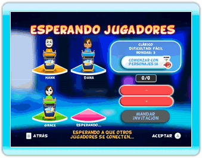

21 |
Conexión Wi-Fi de Nintendo |
 |
|
TV Show King 2 te permite jugar en línea contra amigos, familiares o cualquier otra persona.
Una vez que hayas configurado tu Conexión En el menú principal, elige ‘Jugar’. Elige ‘Quiz en línea’ en el menú Tipo de partida. En el menú Quiz en línea, puedes elegir entre ver las clasificaciones en línea o empezar a jugar. Elige ‘Empezar a jugar’ si quieres jugar en línea. Tras haber elegido tu Mii y tu podio, tendrás que elegir qué tipo de partida quieres jugar. Modifica a tu gusto las opciones de modo de quiz, dificultad y rondas y luego elige ‘Jugar con cualquiera’. Desde este menú, también puedes administrar tu lista de amigos seleccionando ‘Jugar con amigos’. Para más detalles sobre la lista de amigos y las acciones que puedes realizar desde allí, consulta la sección Amigos en línea.  Después de seleccionar ‘Jugar con cualquiera’ o invitar a tus amigos (ver sección Amigos en línea), verás una pantalla de espera. No necesitas hacer nada, sencillamente tienes que esperar a que el resto de sitios sean ocupados. Si quieres, puedes empezar la partida con personajes de inteligencia artificial. Si decides cambiar las opciones que has seleccionado, puedes oprimir el Botón B para volver a la pantalla anterior. Cuando al menos dos jugadores (incluyéndote a ti) se hayan unido a la partida, podrás empezar la partida aunque el resto de sitios estén vacíos. Esto significa que los jugadores que falten serán remplazados por personajes de inteligencia artificial. La partida solo comenzará con personajes de inteligencia artificial si los jugadores que estén conectados han seleccionado el icono ‘Comenzar con jugadores IA’. Una marca indicará qué jugadores han seleccionado ese icono.
Cuando eliges los ajustes para tu concurso en línea, también puedes seleccionar ‘Jugar con amigos’ para introducir una clave de amigo o administrar tu lista de amigos. En esta pantalla puedes: A) INTRODUCIR UNA NUEVA CLAVE DE AMIGO Usa el teclado numérico que aparece en la pantalla para introducir los doce dígitos de la clave de amigo. En cuanto tu amigo introduzca tu clave de amigo en su consola Wii, ya seréis amigos. B) VER TU CLAVE DE AMIGO Aquí puedes ver tu propia clave de amigo. Si quieres que alguien se convierta en tu amigo, tendrás que darle esta clave de amigo. C) INTERACTUAR CON AMIGOS En la parte derecha de la pantalla verás una lista con todos tus amigos. Se trata de tu lista de amigos. Puedes determinar el estado de cada uno de tus amigos (desconectado, conectado, no disponible, esperando a alguien, esperando amigos, seleccionados para invitar) en función del color de su etiqueta. Puedes seleccionar el icono con el nombre de uno de tus amigos y eliminarlo de tu lista de amigos, sin importar su estado. Si el estado de uno de tus amigos muestra que está esperando para jugar una partida (con cualquiera o con amigos), puedes seleccionar el icono con su nombre y unirte a esa partida. Si haces esto, no tendrás que elegir los ajustes de la partida y te conectarás con tu amigo/a. Y finalmente, si tu amigo/a está conectado/a, puedes seleccionar el icono con su nombre para invitarle a tu partida. Ten en cuenta que tienes que elegir a todos los amigos a los que quieres invitar y luego seleccionar el icono ‘Enviar invitación’ para invitarles. Llegados a este punto, irás directamente a la pantalla de espera. |
 |
 |
 |